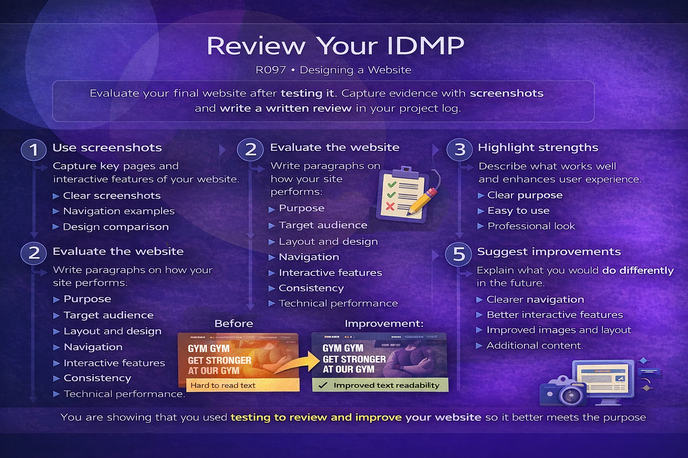

Task 3A(iv) Review effectiveness
Review the effectiveness of your website for the client and audience.
Task 3B – Review the IDMP (Your Website)
In this section you must review how effective your finished website (IDMP) is. This is a written evaluation in your project log supported with screenshots of your pages.
What you are doing
You are evaluating whether your completed website works as intended and how well it meets: the purpose of the site, the needs of the target audience, and the requirements of the client brief.
Evidence to include
- Screenshots of key pages of your website
- Screenshots showing navigation, interactive features and layout
- References back to your site plan and wireframe designs
What to review
Write clear paragraphs explaining how well your website performs in the following areas:
- Purpose: Does the website successfully achieve its intended goal?
- Target audience: Is it suitable and appealing for the intended users?
- Layout and design: Does the site look professional and match your plan?
- Navigation: Is it easy for users to move around the site?
- Interactive features: Do forms, galleries, quizzes, videos etc. work correctly?
- Consistency: Are colours, fonts and styles consistent across pages?
- Technical performance: Do pages load correctly? Are there any errors?
Strengths
Explain what works particularly well in your website and why this improves the user experience.
Weaknesses
Identify any problems you noticed when testing the site (e.g. broken links, slow loading images, confusing layout, inconsistent styling, features that did not work as planned).
Link back to your planning
Refer back to your original site plan and wireframes and explain how closely your final website matches your designs.
Reminder: This is a written review in your project log supported with screenshots, not a checklist or table.